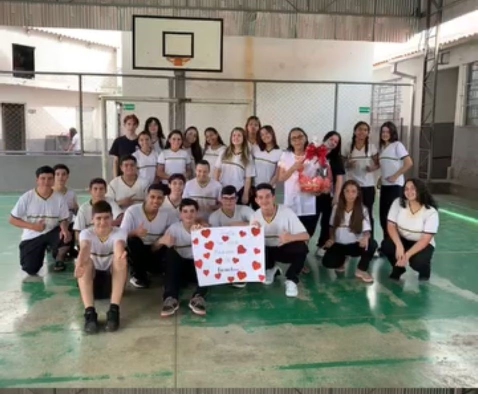
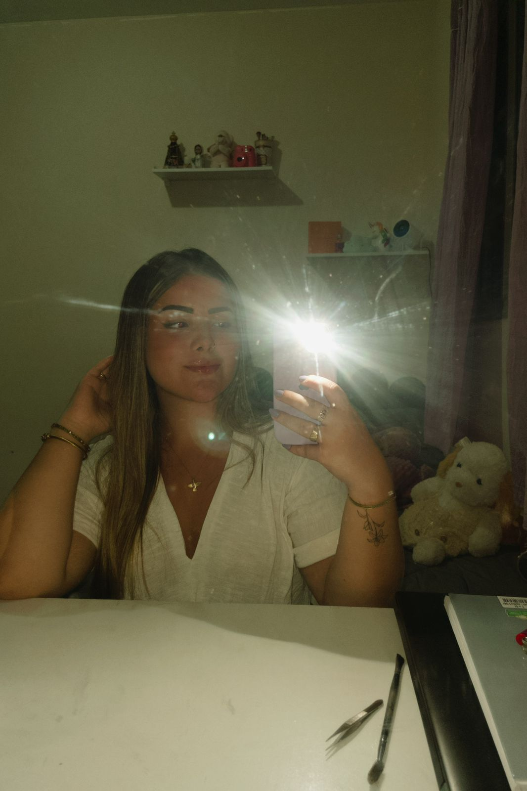

Sobre a trajetória:
Minha trajetória escolar recente foi marcada por grandes mudanças e aprendizados.
Iniciei o ensino médio em 2024, no Paraná, em um sistema de ensino totalmente
diferente do que eu conheci em São Paulo. Foi um périodo de descobertas e adptações,
onde precisei aprender a lidar com o novo e 'confuso' de forma madura.


Minhas metas de 2024:
No primeiro ano, meu projeto de vida ainda estava ganhando forma.
Eu já sentia uma forte conexão com a ideia de ser advogada criminalista, mas,
na correria entre os estudos e o trabalho, eu ainda não
parava para pesquisar ou me aprofundar na área.
Era um desejo que eu guardava comigo, esperando o momento certo para florescer.